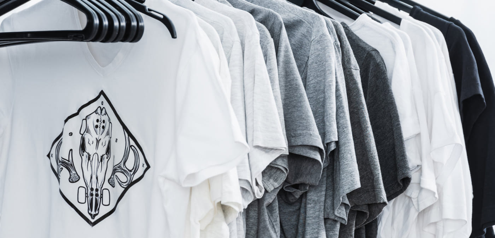
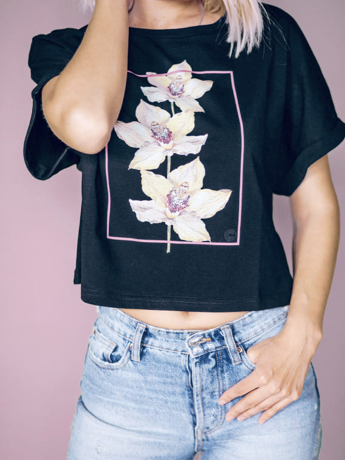
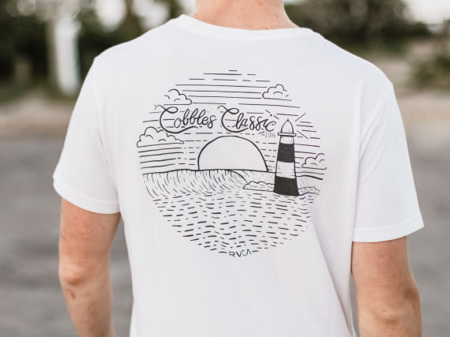
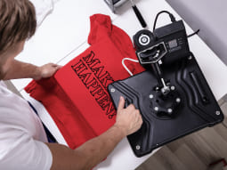
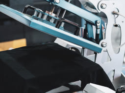
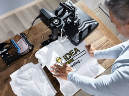
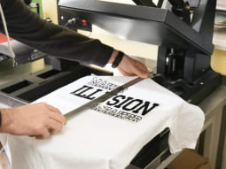
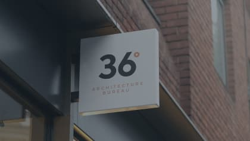
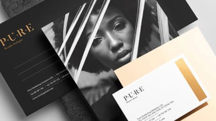

21. 03. 2020 | НОВОСТЬ
Собственный стиль в печати на футболках
Что такое печать на футболках
Футболки – универсальный вид одежды, который можно встретить в гардеробах миллионов людей. Удобные, стильные, привлекательные с различными надписями и изображениями они всегда в тренде. Цветовая гамма модных футболок обширна, что позволяет без труда подобрать футболку определенного цвета и оттенка. Максимально модными их делают различные виды отделки. Украшенные таким способом они превращаются в необычные вещи, удачно сочетающиеся с любым гардеробом.
Оригинальный дизайн футболок с разнообразными рисунками позволяет современным модницам и модникам значительно выделяться из толпы. Этот вид одежды в таком формате довольно молодое явление в мире моды. До недавнего времени нанесение печати на материал было простым. Сегодня современные способы нанесения изображений, рисунков, логотипов позволяют заказать печать на футболках в любом объеме. Футболки используют в качестве универсального рекламного инструмента, заказывают в виде корпоративной одежды, преподносят в качестве подарков.
 Способы печати
Шелкография - оригинальный способ, позволяющий в промышленных масштабах за короткое время наносить печать на футболках по заданным параметрам. Этот способ с точки зрения экономии наиболее выгоден заказчику. Печатные изображения отличаются износостойкостью и отличным качеством. Подходит тем кто заинтересован в наименьших затратах при заказах небольших тиражей. В рабочем процессе задействована печатная форма – трафарет. Через нее по контуру изображения краска проникает на материал.
Современный технологический процесс позволяет методом шелкографии создавать уникальные разноцветные изображения, узоры. Производится печать на футболки поэтапно. Высокотехнологичные методы, уникальные свойства специальной краски делают печать изображения особенно контрастными, а цвета наиболее яркими. Полученное изображение устойчиво к истиранию, способно сохранить свои первоначальные свойства в течение длительного времени. Спрос на такую продукцию постоянно растет. Заказать печать на футболках дешево, можно в компании предварительно связавшись с менеджером.
- 
- 
- 
- 
Кому нужна печать на футболках
Самая удобная вещь, которую можно надевать практически каждый день – футболка. Как найти именно ту, которая соответствует образу? Не всегда поиски определенной модели и желаемого рисунка успешны. Можно затратить немало времени в хождениях по рынкам и магазинам в тщетных поисках. Одним из самых востребованных изделий на сегодняшний день является футболка с печатью рисунка по индивидуальному заказу.
Доступные технологии позволяют наносить рисунки на любую, даже самую тонкую поверхность ткани. На изделиях разных размеров можно сделать любую печать с логотипом, текстом или фотографией. Ткань футболок высокого качества, она безопасна, приятна, не мнется и прекрасно пропускает воздух. Заказывая футболку с печатью на сайте компании можно ознакомиться с каталогом, где для обозрения представлены разные модели футболок.
Требование к качеству печати постоянно растет. Компании, занимающиеся производством печати на футболках, заботятся о своем имидже и предлагают широкий ассортимент своей продукции. Для заказчиков печать на футболках недорого обойдется несмотря какой объем будет заявлен. Многие предпочитают не покупать, а заказывать футболки с неповторимыми, оригинальными изображениями.
Поделитесь статьей
Вам может понравится
-
новость
21.03.2020
Уникальная услуга «вывеска в аренду»
У владельца любого малого, но успешно развивающегося бизнеса рано или поздно возникает необходимость в дополнительной визуальной рекламе.
-
статья
21.03.2020
Лайфхаки полиграфии от заказчиков
Лайфхаки полиграфии от опытных заказчиков. Сегодня услуги по печати рекламных материалов, кажется, не предоставляет только ленивый. Так как предложений очень много, то, соответственно и достаточно высок.
-
статья
21.03.2020
Полиграфия для бизнеса
Чтобы выделиться среди конкурентов на современном рынке товаров и услуг, или познакомить как можно большее количество людей с новым предприятием, нужна эффективная реклама.